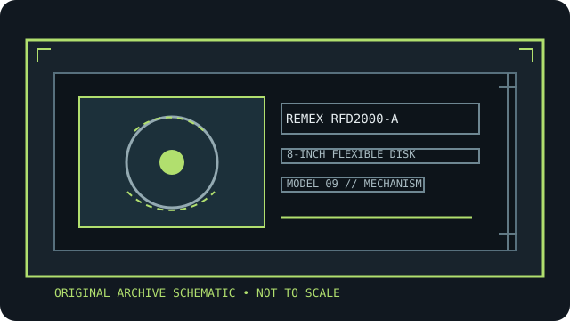

[ INDIVIDUAL COMPONENT // FLOPPY DRIVES ]
Remex RFD2000-A 8-inch diskette drive
This record identifies a real, model-specific 8-inch diskette mechanism. Format capacity and host fit depend on the documented revision, interface options, controller, recording mode, and media; values are not inferred from form factor alone.

IDENTIFICATION NOTE: Remex RFD2000-A is a bare mechanism/drive model, not a generic PC floppy peripheral. Match the full label, PCB revision, connector and voltage configuration to the cited manual before connecting or servicing it.
Model specifications
| Catalog subcategory | 8-inch floppy mechanisms |
|---|---|
| Exact model / family | Remex RFD2000-A 8-inch diskette drive |
| Disk format and capacity | 8-inch, single-sided, single-density operation as identified by RFD2000-A documentation. IBM 3740-style media is a documented compatibility reference; the actual byte capacity depends on controller format and sector layout. |
| Host interface | The RFD2000-A technical manual describes signal and power cabling, interface signals, and customer options. Verify the RFD2000-A connector/pinout; do not infer it from the later RFD4000 or PC floppy drives. |
| Data rate | Use the RFD2000-A manual’s performance/interface tables for recording method and transfer timing. Match the controller’s 8-inch FM rate and data separator; confirm exact speed from the applicable manual revision. |
| Drive select / jumpers | The technical manual covers select and customer-installable options; assign one drive select and configure head-load, termination, ready, and write-protect behavior per the documented board option table. |
| Dimensions / mounting | RFD2000-A outline, mounting, and environmental specifications are in the technical manual. Check actual chassis variant and mounting drawing before installation in a rack or enclosure. |
| Power requirements | Use the RFD2000-A model-specific electrical specification and connector pinout. Confirm the actual AC/DC variant and nameplate; do not connect a PC floppy power plug based on appearance. |
| Controller / host compatibility | Pair with an 8-inch controller supporting the RFD2000-A’s documented single-sided/single-density format and interface. IBM-style media compatibility does not mean direct attachment to a PC floppy controller. |
Model-specific compatibility checks
- Record the complete model suffix, serial/date code, board revision, connector keying, and all drive-select or option links before installation.
- Confirm controller signaling, line termination, host drive-select assignment, recording density, sector geometry, and the manual’s power connector pinout as a single compatible configuration.
- Do not connect by connector shape alone. An 8-inch drive may require non-PC signal conventions, additional DC rails, or a mains-rated supply; follow the model documentation.
Preservation and safety notes
Before service, photograph the board links, connector labels, and head/door condition. Follow the Remex service procedure, avoid energized exposed circuitry, reject contaminated disks, and preserve originals with non-destructive imaging.
For archival work, preserve original media in its native format, make a verified read-only acquisition first, checksum retained copies, and log the drive, controller, software, media condition, and any service or conversion performed.
Manufacturer manuals & archive sources
- Remex RFD2000-A / RFD4000 technical manual scan (Bitsavers archive)OEM technical manual covering RFD2000-A and RFD4000 configuration, installation, interface, and maintenance.
- Remex RFD2000-A Technical Manual (ManualsLib archive)Second archival manual listing for the RFD2000-A; compare it against the exact model suffix/revision.
Consult the exact model/revision manual before applying electrical or service values. Family references are useful only where their coverage matches the marked unit.